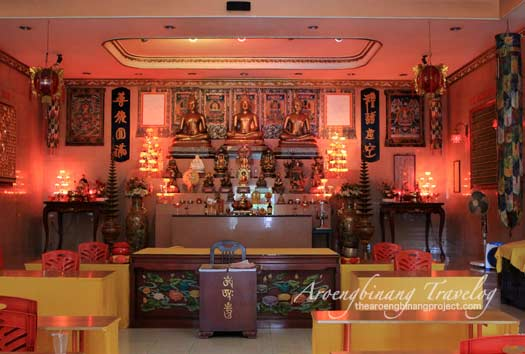

Galeri
gereja' Pekalongan adalah sebuah tempat ibadah warga kristen dan kotolik di Pekalongan Jawa Tengah. Lokasi jetayu dekat lapas loji ini berada di alun alun kota Pekalongan. gereja peninggalan sejarah ini menjadi salah satu ciri khas Kota Pekalongan. Meskipun telah dibangun beberapa gereja baru yang tak kalah megahnya, namun gereja' ini tetap tak tergantikan sebagai simbol kristiani warga Pekalongan.
Vihara'Pekalongan adalah sebuah Tempat ibadah budha wargavdi Pekalongan Jawa Tengah. Lokasi Vihara ini berada di jln belimbing kota Pekalongan. peninggalan sejarah ini menjadi salah satu ciri khas Kota Pekalongan. Meskipun telah dibangun beberapa vihara baru yang tak kalah megahnya, namun vihara' ini tetap tak tergantikan sebagai simbol budha warga Pekalongan.

masjid Masjid Agung Al-jami'Pekalongan adalah sebuah Tempat ibadah muslim warga di Pekalongan Jawa Tengah. Lokasi Masjid ini berada di alun-alun kota Pekalongan. peninggalan sejarah ini menjadi salah satu ciri khas Kota Pekalongan. Meskipun telah dibangun beberapa Masjid baru yang tak kalah megahnya, namun Masjid' ini tetap tak tergantikan sebagai simbol Islami warga Pekalongan

pura'Pekalongan adalah sebuah Tempat Ibadah Hindu di Pekalongan Jawa Tengah. Lokasi pura ini berada Pantisari Panjang Wetan, Panjang Baru, Kec. Pekalongan Utara, Kota Pekalongan, Jawa Tengah . peninggalan sejarah ini menjadi salah satu ciri khas Kota Pekalongan. Meskipun telah dibangun beberapa pura baru yang tak kalah megahnya, namun pura' ini tetap tak tergantikan sebagai simbol hindu warga Pekalongan